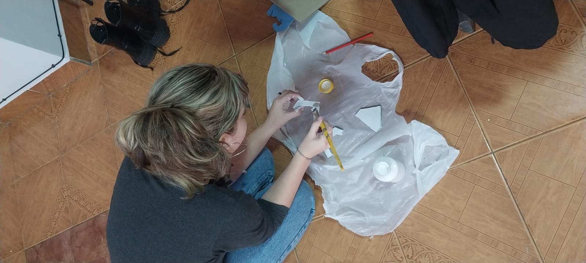
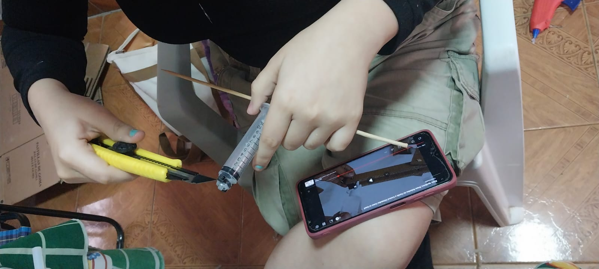
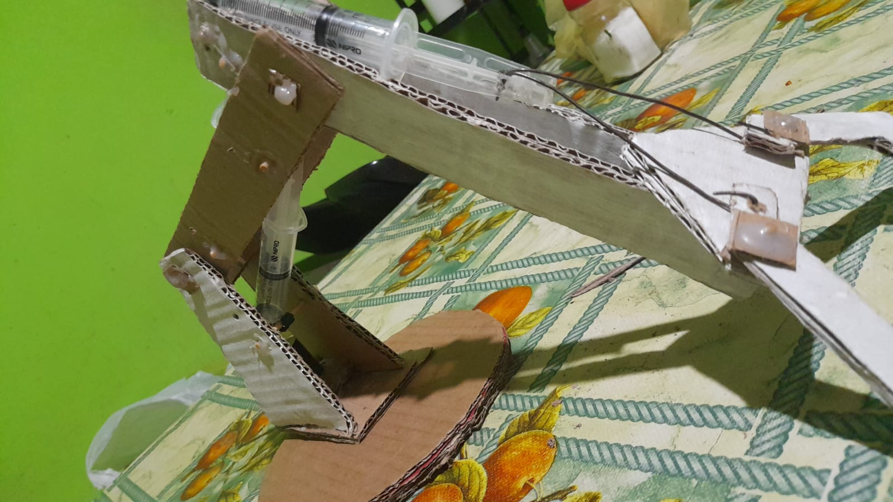
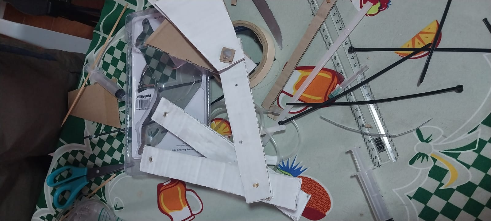

¿Quienes somos?
Alumnos del 2⁰ Bachillerato técnico en Salud
Disertantes :
Ruth Esther Cano Cáceres
Ramon Alejandro Cristaldo Castillo
Thiago Daniel Araujo Aranda
Sofia Sol Mackenna Canteros
Alumnos del 2⁰ Bachillerato técnico en Salud
Disertantes :
Ruth Esther Cano Cáceres
Ramon Alejandro Cristaldo Castillo
Thiago Daniel Araujo Aranda
Sofia Sol Mackenna Canteros
El principio de Pascal o la Ley Pascal es una ley de mecánica de fluidos descubierta por Blaise Pascal. Este principio establece que la presión aplicada en un fluido se transmite sin cambios en todas las direcciones. Es fundamental en el funcionamiento de dispositivos hidráulicos como prensas y sistemas de freno. En este proyecto, exploramos cómo este principio se aplica en los brazos hidráulicos, permitiendo levantar grandes cargas con fuerzas relativamente pequeñas.
El principio de Pascal es poco conocido por muchas personas, y su aplicación en brazos hidráulicos y otros dispositivos es fundamental para facilitar tareas pesadas. Este proyecto busca aumentar la conciencia sobre la importancia de este principio y sus aplicaciones en la industria y tecnología.
Analizar cómo se aplica el principio de Pascal en el funcionamiento del brazo hidráulico.
Un brazo hidráulico es un dispositivo que usa la presión de un líquido para realizar movimientos mecánicos. Está compuesto por cilindros y pistones que permiten mover objetos pesados y realizar tareas diversas, desde la construcción hasta la simulación de movimientos humanos.
La Ley de Pascal afirma que la presión ejercida sobre un fluido se transmite de manera uniforme en todas las direcciones. Esto es fundamental para el funcionamiento de sistemas hidráulicos.
DECORACION Y PINTURA DEL BRAZO HIDRAULICO
PROCESO DE CONSTRUCCION DE LAS PARTES DEL BRAZO HIDRÁULICO
ESQUELETO FINAL DEL BRAZO HIDRAULICO
MATERIALES UTILIZADOS
Este proyecto demuestra cómo la fuerza y presión pueden generar movimiento en cuerpos sólidos, destacando la relevancia de los principios hidráulicos en aplicaciones prácticas y en la industria.
Este proyecto demuestra cómo la fuerza y presión pueden generar movimiento en cuerpos sólidos, destacando la relevancia de los principios hidráulicos en aplicaciones prácticas y en la industria.
Las innovaciones en la mecánica industrial continúan avanzando, pero los principios básicos como el de Pascal siguen siendo esenciales. Este proyecto ha demostrado cómo se puede usar un brazo hidráulico para ilustrar la aplicabilidad y eficacia de este principio.